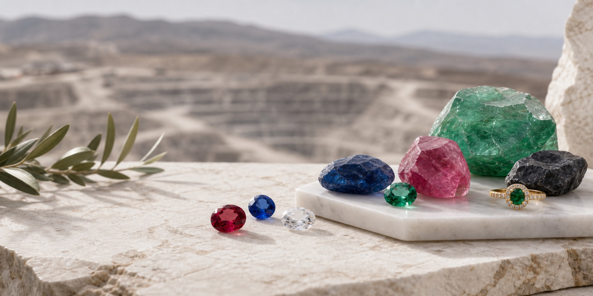
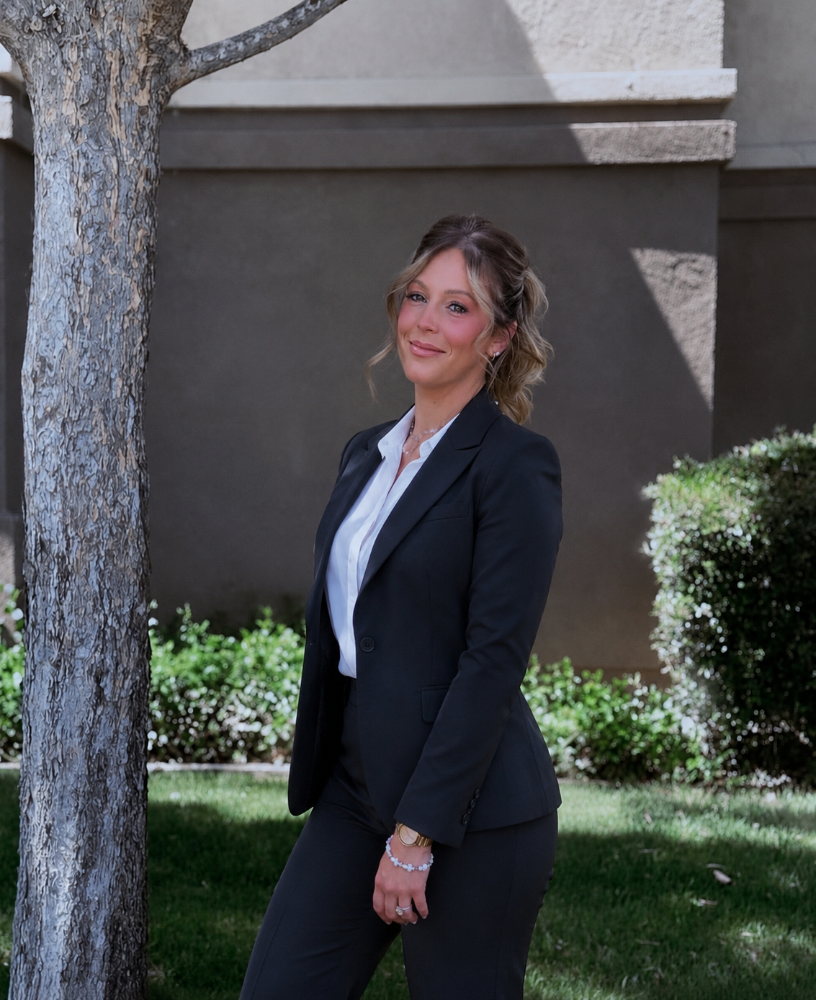

About Us
A family-founded gemstone house built in 1996 and carried forward with purpose.
Cox Walker Jewelry LLC was founded in 1996 by Kenneth Cox Walker, an English-born businessman who relocated to the United States to build a company rooted in gemstones, family stewardship, and long-term trust. Today, that legacy continues under the leadership of his daughter, Maria Cox Walker, together with the wider Cox family.

Kenneth Cox Walker established the company in 1996 after moving from England to the United States in search of wider commercial opportunity and a stronger platform for building a serious gemstone and jewelry enterprise. From the beginning, his vision was clear: create a business where rare stones would be handled with discipline, presented with elegance, and backed by a name that clients could trust for decades rather than seasons.
As the business grew, it became a true family-led operation. Robert Cox helped strengthen sourcing relationships, operational structure, and day-to-day commercial judgment, while Mavis Cox became an important part of the company’s culture of stewardship, helping preserve the values of care, professionalism, and family accountability that Kenneth wanted attached to the company name. Their involvement helped shape a company that could speak with equal credibility to suppliers, cutters, private clients, and long-term trade partners.
Over time, Cox Walker Jewelry LLC expanded into a broader mine-to-market model spanning sourcing, gemstone preparation, cutting, jewelry manufacturing, and private presentation. When Kenneth Cox Walker passed away in 2019, leadership moved to his daughter Maria Cox Walker, his next of kin and natural successor. Under Maria’s leadership, the company continues to honor her father’s standards while shaping a more modern future for a business built on provenance, family legacy, and refined luxury.